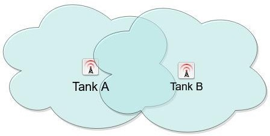

Background
Bluetooth low energy beacons (beacons) have excellent applications in proximity detection. This can be useful in museum and retail scenarios where notifications appear in a mobile application when a visitor comes within proximity of a particular beacon.
However, beacons transmit radio frequency which has a non-uniform coverage. Therefore, as the distance between beacons shrink (i.e. because the tanks are closer to each other), the coverage overlap between beacons increases. This overlap results in ambiguity or false triggers. In other words, a visitor may be standing close to Tank A and get a notification about Tank B which is also very close to Tank A.

Physical Solution
In greenfield scenarios, where the museum operator has control where to place information displays, it is recommended to separate them as much as possible. This approach may not always be feasible unless considered at design time.
PenguinIN Approach
There are many techniques that PenguinIN software development kit (SDK) employs to resolve the issue of false triggering and report the tank ID correctly. However, there will always be scenarios when false triggering occurs. Please note, this is not a limitation of the PenguinIN SDK, it is fundamental limitation of RF propagation and beacon technology. Sub-meter accuracy can be achieved using dedicated hardware such as Ultra-Wide Band which is not available in all mobile smartphones today.
Mobile Application Recommendations
In deployments where false trigger scenarios are inevitable, the app development team should resolve the ambiguity in the location information in the app domain. For example, the mobile application may present the visitor with an ordered list of the tanks which are most likely present in their vicinity and then prompt the visitor to choose the tank they are interested in.
Future Directions
Beacon technology is very versatile for museums and can be used to build education and gamification elements to enrich the visitor experience. For more information on other applications of beacon technology, please feel free to reach to info@penguinin.com or visit our website www.penguinin.com
Platforms